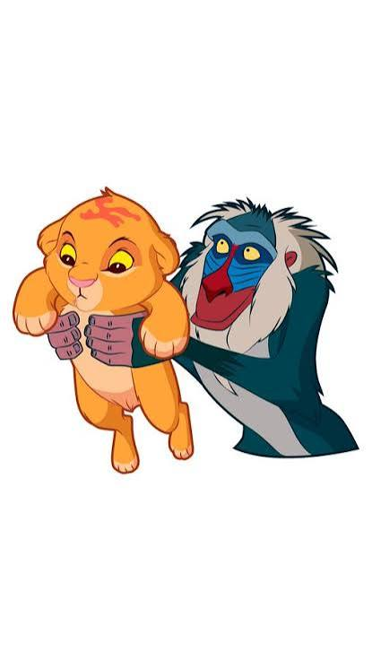
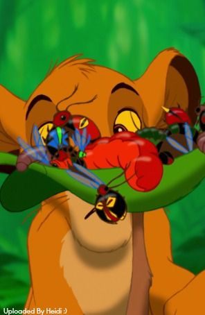

Primera parada · 12:00 h
La ceremonia
Parroquia Nuestra Señora de la Encarnación
Churra, Murcia
Algo despierta en la sabana…
Toca el sol
Ha llegado el pequeño rey de la sabana
Torralba Guillén
¡se bautiza!
Con mucho cariño te invitamos al
Sábado, 14 de noviembre de 2026
Luka empieza su gran aventura y queremos compartir este día tan especial contigo. Sigue el camino y descubre dónde nos vemos.

Primera parada · 12:00 h
Parroquia Nuestra Señora de la Encarnación
Churra, Murcia
Después, un paseo hasta la celebración…

Segunda parada · desde las 13:30 h
Restaurante Cobatillas
Comemos, brindamos y celebramos juntos
Faltan para el gran día
¡Hoy es el gran día! 🦁☀️
Confirmar asistencia.
La canción de este día